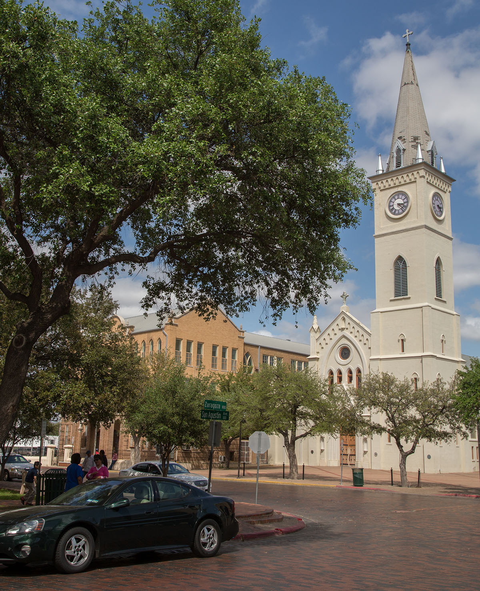
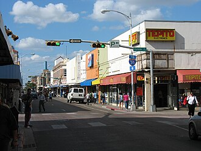

Laredo, Texas
Laredo (English pronunciation: /ləˈɹeɪdoʊ/ ; Spanish pronunciation: [laˈɾeðo]) is a city in the U.S. state of Texas and the county seat and largest city of Webb County, on the north bank of the Rio Grande in South Texas, across from Nuevo Laredo, Tamaulipas, Mexico. Founded in 1755, Laredo grew from a village to the capital of the short-lived Republic of the Rio Grande to the largest inland port on the Mexican border. Laredo's economy is primarily based on international trade with Mexico, and as a major hub for three areas of transportation: land, rail, and air cargo. The city is on the southern end of I-35, which connects manufacturers in northern Mexico through Interstate 35 as a major route for trade throughout the U.S. It has four international bridges and two railway bridges.

According to the 2020 census, the city's population was 255,205, making it the 11th-most populous city in Texas and third-most populated U.S. city on the Mexican border, after San Diego, California, and El Paso, Texas. Its metropolitan area is the 178th-largest in the U.S. and includes all of Webb County, with a population of 267,114. Laredo is also part of the cross-border Laredo-Nuevo Laredo metropolitan area with an estimated population of 636,516.
Laredo's Hispanic proportion of 95.15% is one of the highest proportion of Hispanic Americans of any city in the United States outside of Puerto Rico.

Texas A&M International University and Laredo College are in Laredo. Laredo International Airport is within the Laredo city limits, while the Quetzalcoatl International Airport is nearby in Nuevo Laredo on the Mexican side.
The biggest festival, Washington's Birthday Celebration, is held during the later part of January and the majority of February, attracting hundreds of thousands of tourists.